Discover the temples, culture, and beautiful places of Siem Reap with a friendly local tuk-tuk driver.
If you would like to travel around Siem Reap, please contact me.
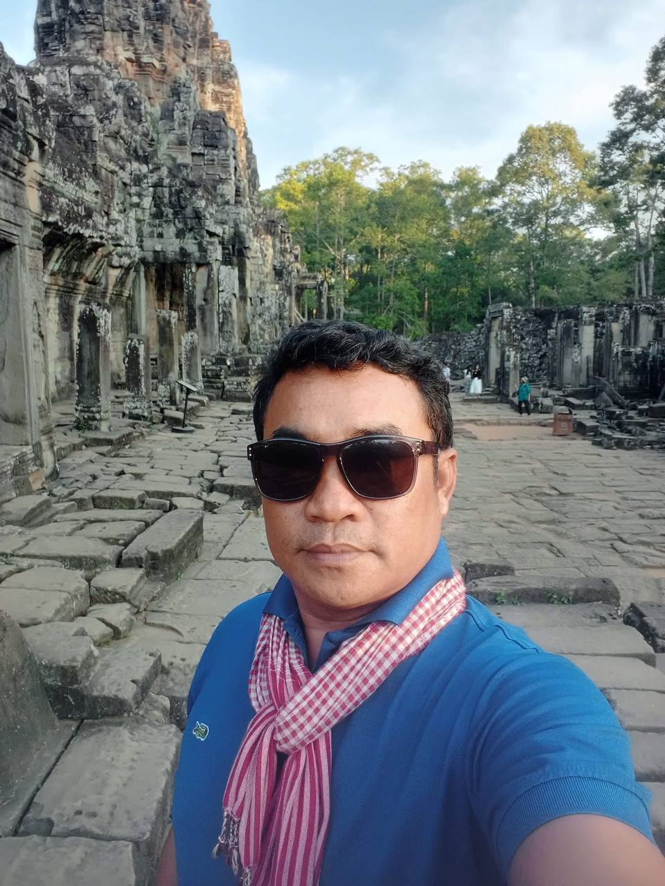
Hello! My name is CHAN VICHETH. I am a local tuk-tuk driver in Siem Reap, Cambodia.
I enjoy meeting visitors from different countries and helping them discover the beautiful places of Siem Reap.
I can take you to Angkor Wat, other temples, local markets, restaurants, and many beautiful places around Siem Reap.
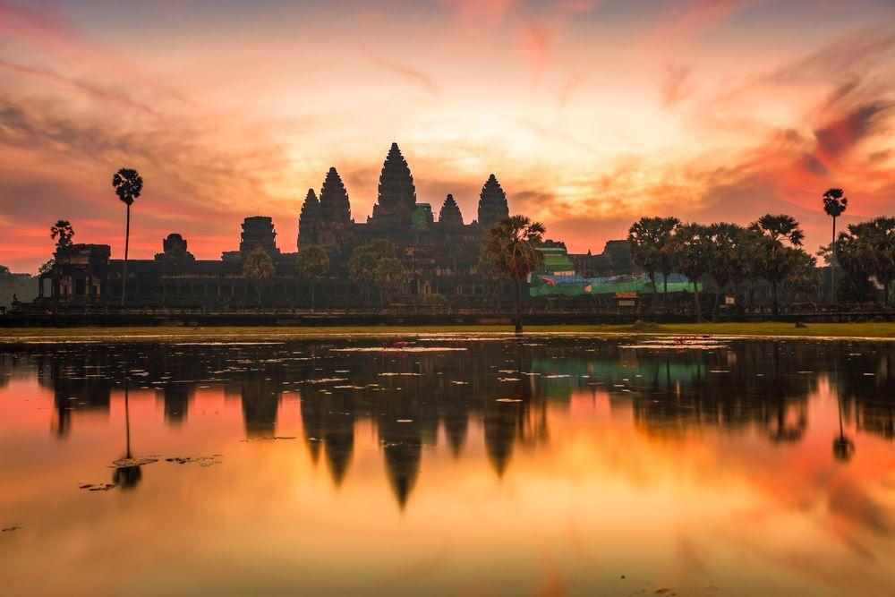
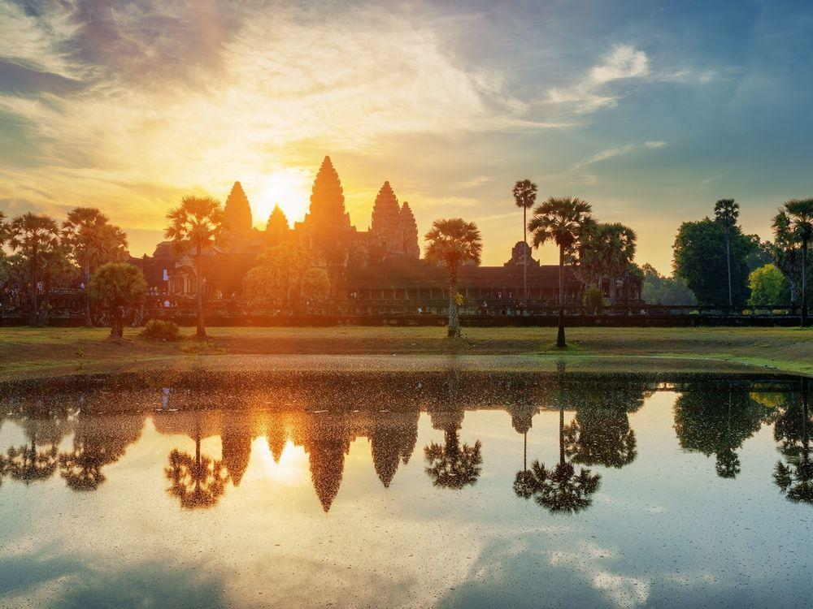
Visit one of Cambodia's most famous temples and discover its amazing architecture.
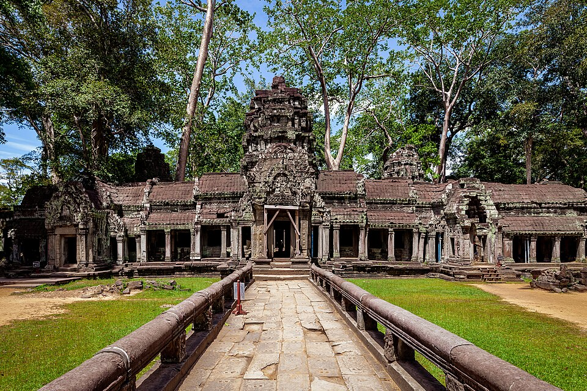
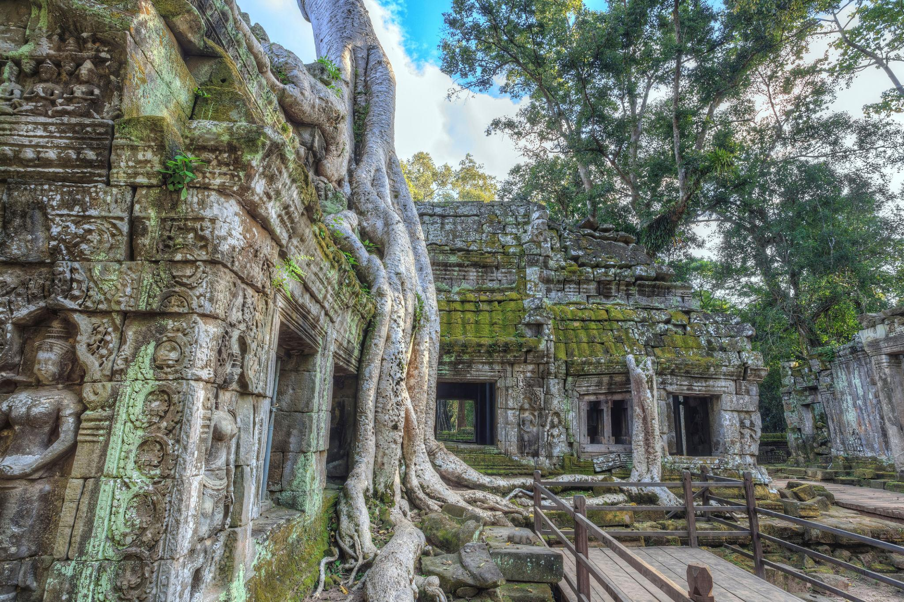
Explore the famous temple surrounded by trees and nature.
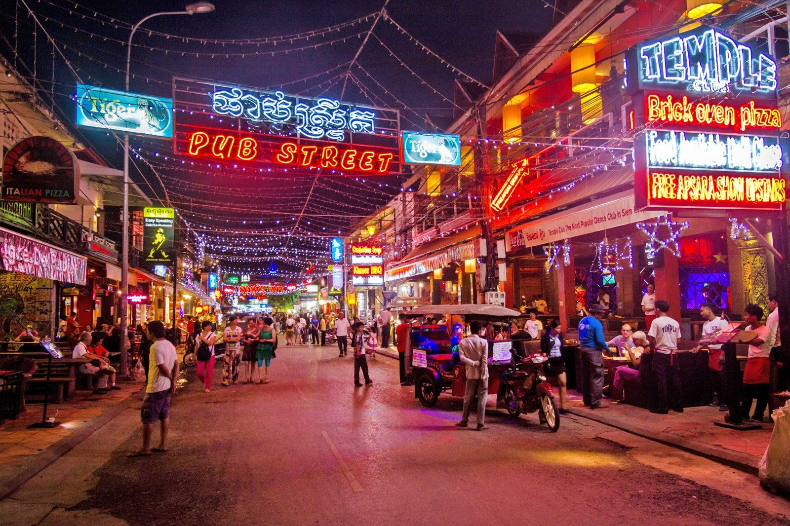
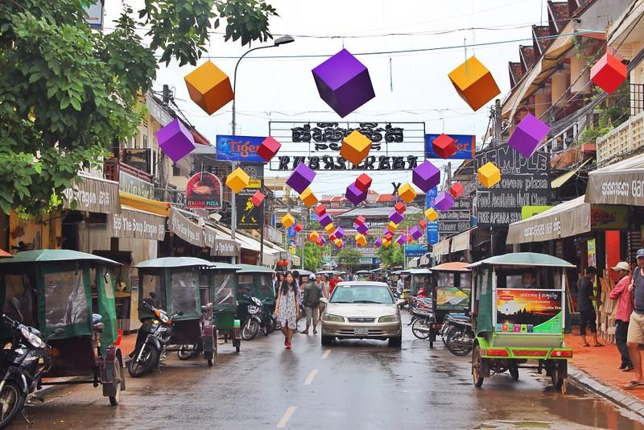
Enjoy the lively atmosphere, resturants, shops, and nightlife of Siem Reap.
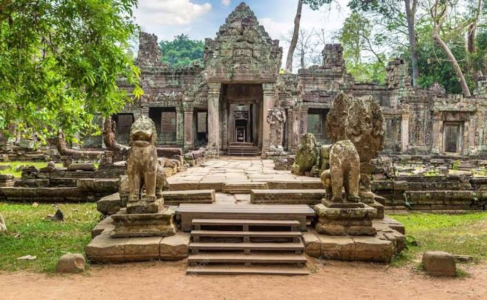
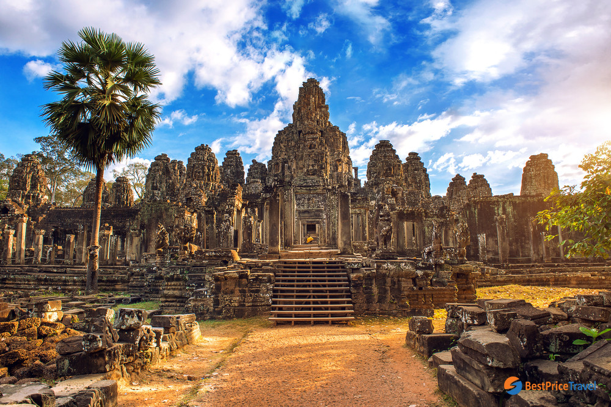
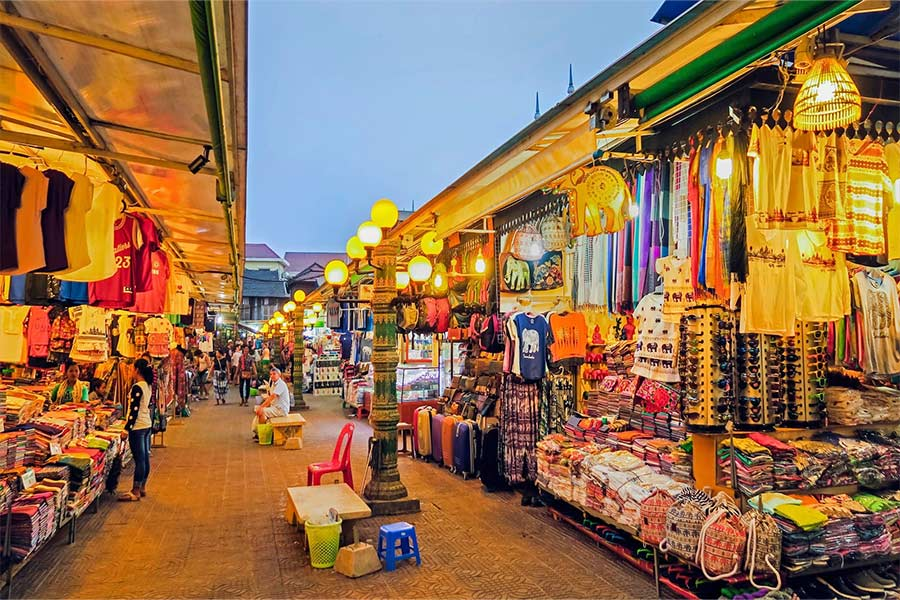
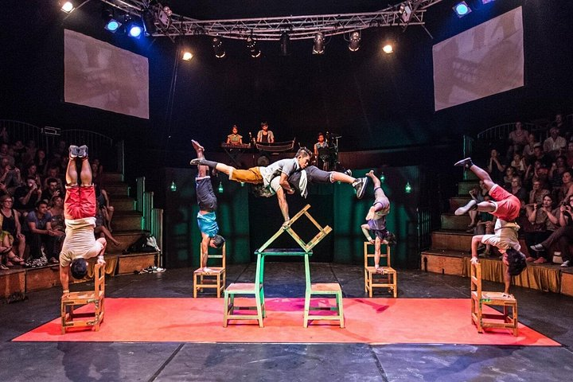
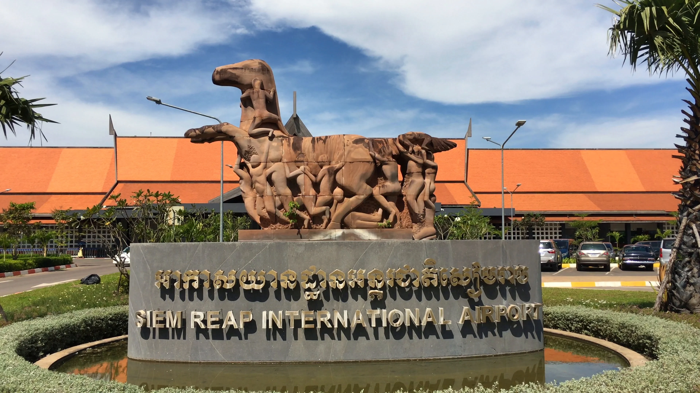
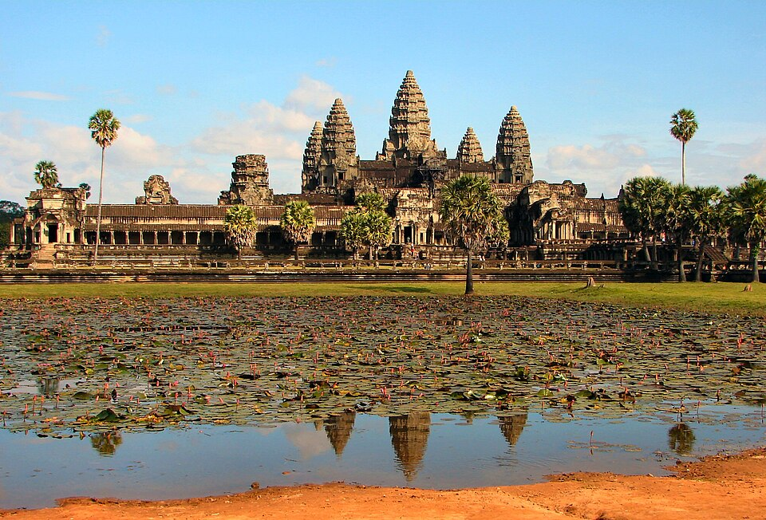
Angkor Wat is one of the most famous temples in Cambodia. It is a beautiful historical place and a popular destination for visitors in Siem Reap.
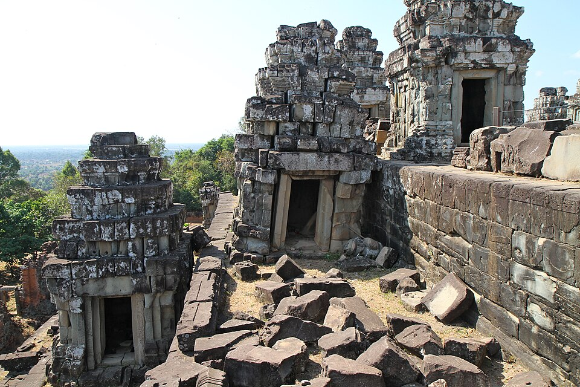
…is a Hindu temple in the form of a temple mountain. Dedicated to Shiva, it was built at the end of the 9th century, during the reign of King Yasovarman (889-910). Located atop a hill, it is nowadays a popular tourist spot for sunset views of the much bigger temple Angkor Wat, which lies amid the jungle about 1.5 km to the southeast. The large number of visitors makes Phnom Bakheng one of the most threatened monuments of Angkor. Constructed more than two centuries before Angkor Wat, Phnom Bakheng was in its day the principal temple of the Angkor region, historians believe. It was the architectural centerpiece of a new capital, Yasodharapura, that Yasovarman built when he moved the court from the capital Hariharalaya in the Roluos area located to the southeast. An inscription dated 1052 AD. and found at the Sdok Kak Thom temple in present-day Thailand states in Sanskrit: “When Sri Yasovardhana became king under the name of Yasovarman, the able Vamasiva continued as his guru. By the king’s order, he set up a linga on Sri Yasodharagiri, a mountain equal in beauty to the king of mountains.” Scholars believe that this passage refers to the consecration of the Phnom Bakheng temple approximately a century and a half earlier. Surrounding the mount and temple, labor teams built an outer moat. Avenues radiated out in the four cardinal directions from the mount. A causeway ran in a northwest-southeast orientation from the old capital area to the east section of the new capital’s outer moat and then, turning to an east-west orientation, connected directly to the east entrance of the temple. Phnom Bakheng is a symbolic representation of Mount Meru, home of the Hindu gods, a status emphasized by the temple’s location atop a steep hill. The temple faces east, measures 76 meters square at its base and is built in a pyramid form of six tiers. At the top level, five sandstone sanctuaries, in various states of repair, stand in a quincunx pattern—one in the center and one at each corner of the level’s square. Originally, 108 small towers were arrayed around the temple at ground level and on various of its tiers; most of them have collapsed. Jean Filliozat of the Ecole Francaise, a leading authority on Indian cosmology and astronomy, interpreted the symbolism of the temple. The temple sits on a rectangular base and rises in five levels and is crowned by five main towers. One hundred four smaller towers are distributed over the lower four levels, placed so symmetrically that only 33 can be seen from the center of any side. Thirty-three is the number of gods who dwelt on Mount Meru. Phnom Bakheng’s total number of towers is also significant. The center one represents the axis of the world and the 108 smaller ones represent the four lunar phases, each with 27 days. The seven levels of the monument represent the seven heavens and each terrace contains 12 towers which represent the 12-year cycle of Jupiter. According to University of Chicago scholar Paul Wheatley, it is “an astronomical calendar in stone.” Phnom Bakheng is one of three hilltop temples in the Angkor region that are attributed to Yasovarman’s reign. The other two are Phnom Krom to the south near the Tonle Sap lake, and Phnom Bok, northeast of the East Baray reservoir. Following Angkor’s rediscovery by the outside world in the mid-19th century, decades passed before archeologists grasped Phnom Bakheng’s historical significance. For many years, scholars’ consensus view was that the Bayon, the temple located at the center of Angkor Thom city, was the edifice to which the Sdok Kak Thom inscription referred. Later work identified the Bayon as a Buddhist site, built almost three centuries later than originally thought, in the late 12th century, and Phnom Bakheng as King Yasovarman’s state temple.
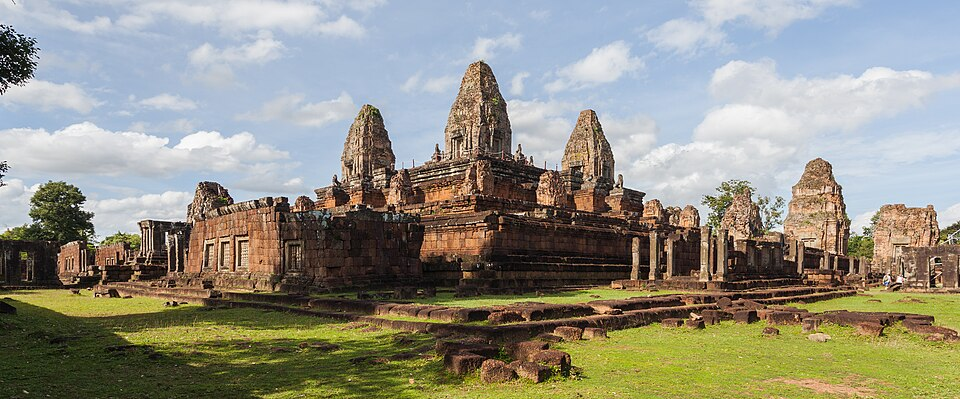
…is a temple at Angkor, Cambodia, built as the state temple of Khmer king Rajendravarman and dedicated in 961 or early 962. It is a temple mountain of combined brick, laterite and sandstone construction. The temple’s name is a comparatively modern one meaning “turn the body”. This reflects the common belief among Cambodians that funerals were conducted at the temple, with the ashes of the body being ritually rotated in different directions as the service progressed. Located just south of the East Baray, or eastern reservoir, Pre Rup is aligned on a north-south axis with the East Mebon temple, which is located on what was an artificial island in the baray. The East Mebon was also a creation of the reign of Rajendravarman. Pre Rup’s extensive laterite and brick give it a pleasing reddish tone that is heightened by early morning and late afternoon sunlight. The temple has a square lay-out and two perimeter walls. The outer enclosure is a platform bounded by a laterite wall, 117 meters N-S by 127 meters E-W. A laterite causeway gives entry from the east; unfortunately, a modern road cuts across it. The four external gopurams are cross-shaped, having a central brick section (consisting of three rooms flanked by two independent passageways) and a sandstone vestibule on both sides. To either side inside the eastern gate is a group of three towers aligned north to south. One of the towers appears to have never been built or to have been dismantled later, however they are later additions, probably by Jayavarman V. Further ahead, through another gate, libraries lie to either side of the walkway on the second platform. Just before the entrance there is a stone “cistern”, but scholars believe it was a basement for a Nandi bronze statue rather than being used for cremation ceremonies. There is also a series of long distinct galleries running along each side, a distinctive feature of 10th century architecture that would be substituted by a continuous gallery from Ta Keo onward. The final squared pyramid, measuring 50 m at its base, rises in three steep tiers a dozen metres in height to a 35 m square platform at the summit. The lowest tier is symmetrically surrounded by 12 small shrines. At the top, five towers are arranged in a quincunx, one at each corner of the square and one in the center. Deities carved as bas-reliefs stand guard at either side of the central tower’s eastern door; its other doors are false doors. The southwest tower once contained a statue of Lakshmi, the northwest tower a statue of Uma, the southeast tower a statue of Vishnu and the northeast tower a statue of Shiva. The last one has an inscription on door jambs that dates from Jayavarman VI and is the only proof of his reign at Angkor
…is the modern name of a temple built in the Bayon style largely in the late 12th and early 13th centuries and originally called Rajavihara. Located approximately one kilometre east of Angkor Thom and on the southern edge of the East Baray, it was founded by the Khmer King Jayavarman VII as a Mahayana Buddhist monastery and university. Unlike most Angkorian temples, Ta Prohm has been left in much the same condition in which it was found: the photogenic and atmospheric combination of trees growing out of the ruins and the jungle surroundings have made it one of Angkor’s most popular temples with visitors. UNESCO inscribed Ta Prohm on the World Heritage List in 1992. Today, it is one of the most visited complexes in Cambodia’s Angkor region. The conservation and restoration of Ta Prohm is a partnership project of the Archaeological Survey of India and the APSARA (Authority for the Protection and Management of Angkor and the Region of Siem Reap) Foundation and Expansion After ascending the throne of Cambodia in 1181 A.D., Jayavarman VII embarked on a massive program of construction and public works. Rajavihara (“royal temple”), today known as Ta Prohm (“ancestor Brahma”), was one of the first temples founded pursuant to that program. The stele commemorating the foundation gives a date of 1186 A.D. Jayavarman VII constructed Rajavihara in honor of his family. The temple’s main image, representing Prajnaparamita, the personification of wisdom, was modelled on the king’s mother. The northern and southern satellite temples in the third enclosure were dedicated to the king’s guru and his elder brother respectively. As such, Ta Prohm formed a complementary pair with the temple monastery of Preah Khan, dedicated in 1191 A.D., the main image of which represented the Bodhisattva of compassion Lokesvara and was modelled on the king’s father. The temple’s stele records that the site was home to more than 12,500 people (including 18 high priests and 615 dancers), with an additional 80,000 souls in the surrounding villages working to provide services and supplies. The stele also notes that the temple amassed considerable riches, including gold, pearls and silks. Expansions and additions to Ta Prohm continued as late as the rule of Sri Indravarman at the end of the 13th century. Abandonment and Restoration After the fall of the Khmer empire in the 15th century, the temple of Ta Prohm was abandoned and neglected for centuries. When the effort to conserve and restore the temples of Angkor began in the early 20th century, the École française d’Extrême-Orient decided that Ta Prohm would be left largely as it had been found, as a “concession to the general taste for the picturesque.” According to pioneering Angkor scholar Maurice Glaize, Ta Prohm was singled out because it was “one of the most imposing [temples] and the one which had best merged with the jungle, but not yet to the point of becoming a part of it”. Nevertheless, much work has been done to stabilize the ruins, to permit access, and to maintain “this condition of apparent neglect.” As of 2010, however, it seems Archaeological Survey of India has undertaken a more aggressive approach to restoration. All the plants and shrubs have been cleared from the site and some of trees are also getting removed. A crane has been erected and a large amount of building work is underway to restore the temple, with much of the work seemingly just rebuilding the temple from scratch as at other sites. Wooden walkways, platforms, and roped railings have been put in place around the site which now block some of the previously famous postcard photo opportunities.
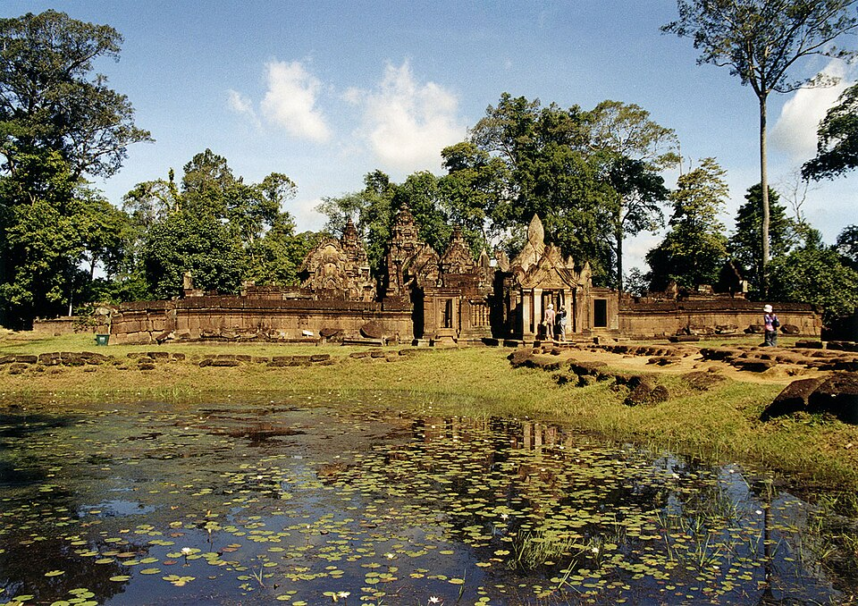
…is a 10th century Cambodian temple dedicated to the god Shiva. It lies near the hill of Phnom Dei, 25 km (16 mi) north-east of the main group of temples that once belonged to the medieval capitals of Yasodharapura and Angkor Thom. Banteay Srei is built largely of red sandstone a medium that lends itself to the elaborate decorative wall carvings which are still observable today. The buildings themselves are miniature in scale, unusually so when measured by the standards of Angkorian construction. These factors have made the temple extremely popular with tourists, and have led to its being widely praised as a “precious gem”, or the “jewel of Khmer art.”
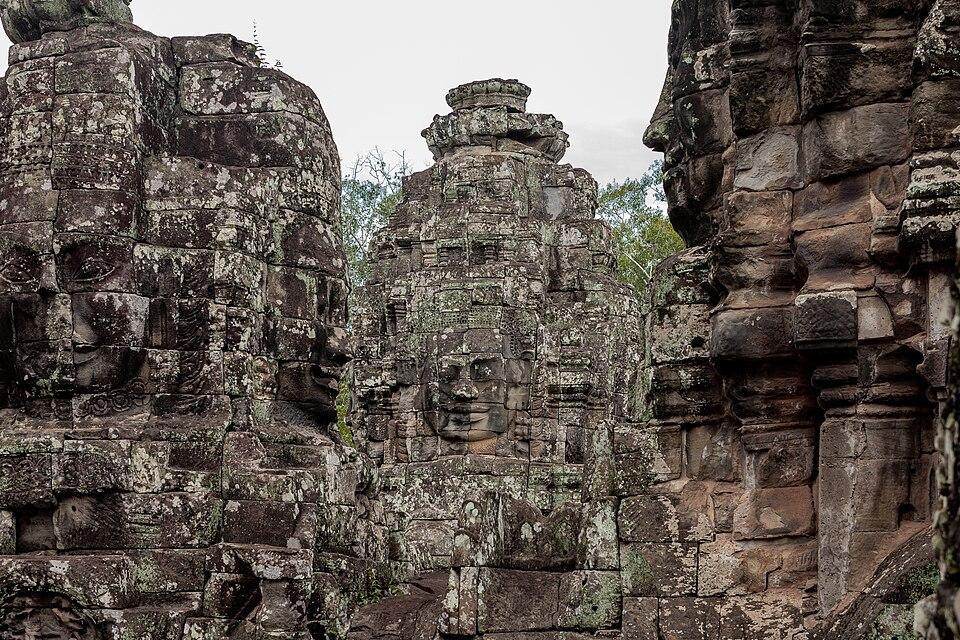
…is a well-known and richly decorated Khmer temple at Angkor in Cambodia. Built in the late 12th century or early 13th century as the official state temple of the Mahayana Buddhist King Jayavarman VII, the Bayon stands at the centre of Jayavarman’s capital, Angkor Thom. Following Jayavarman’s death, it was modified and augmented by later Hindu and Theravada Buddhist kings in accordance with their own religious preferences. The Bayon’s most distinctive feature is the multitude of serene and massive stone faces on the many towers which jut out from the upper terrace and cluster around its central peak.[2] The temple is known also for two impressive sets of bas-reliefs, which present an unusual combination of mythological, historical, and mundane scenes. The current main conservatory body, the Japanese Government team for the Safeguarding of Angkor (the JSA) has described the temple as “the most striking expression of the baroque style” of Khmer architecture, as contrasted with the classical style of Angkor Wat.
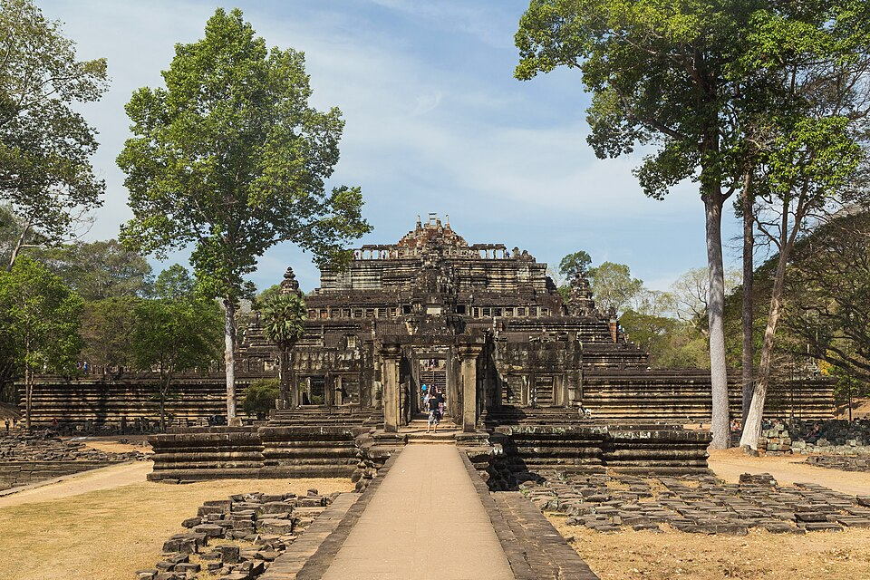
…is a temple located in Angkor Thom, northwest of the Bayon. Built in the mid-11th century, it is a three-tiered temple mountain built as the state temple of Udayadityavarman II dedicated to the Hindu God Shiva. It is the archetype of the Baphuon style. The temple adjoins the southern enclosure of the royal palace and measures 120 metres east-west by 100 metres north-south at its base and stands 34 meters tall without its tower, which would have made it roughly 50 meters tall. Its appearance apparently impressed Emperor Chengzong of Yuan China’s late 13th century envoy Chou Ta-Kuan during his visit from 1296 to 1297, who said it was ‘the Tower of Bronze…a truly astonishing spectacle, with more than ten chambers at its base.’ In the late 15th century, the Baphuon was converted to a Buddhist temple. A 9 meter tall by 70 meter long statue of a reclining Buddha was built on the west side’s second level, which probably required the demolition of the 8 meter tower above, thus explaining its current absence. The temple was built on land filled with sand, and due to its immense size the site was unstable throughout its history. Large portions had probably already collapsed by the time the Buddha was added. By the 20th century, much of the temple had largely collapsed, and restoration efforts have since proven problematic: a first effort begun in 1960 was interrupted by the coming to power of the Khmer Rouge, and records of the positions of the stones were lost. A second attempt started in 1995 by a team of French-led archeologists as of 2005 was still ongoing, restricting visitor access. As of November 2010, partial visitor access was once again allowed, though not to the central structure. In April 2011, after 51 years, the archaeologists finished the restoration of the temple. King Norodom Sihamoni of Cambodia and Prime Minister Francois Fillon of France were among those who first toured the renovated temple during the inauguration ceremony on July 3, 2011
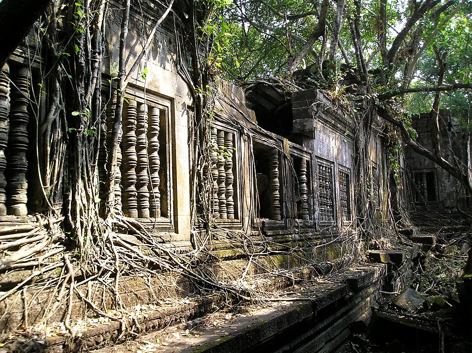
…is a temple located 40 km east of the main group of temples on the ancient royal highway to Preah Khan Kompong Svay. It was built as a Hindu temple, but there are some carvings depicting buddhist motifs. Its primary material is sandstone and it is largely unrestored, with trees and thick brush thriving amidst its towers and courtyards and many of its stones lying in great heaps. For years it was difficult to reach, but a road recently built to the temple complex of Koh Ker passes Beng Mealea and more visitors are coming to the site, as it is 77 km from Siem Reap by road. The history of the temple is unknown and it can be dated only by its architectural style, identical to Angkor Wat, so scholars assumed it was built during the reign of king Suryavarman II in the early 12th century. Smaller in size than Angkor Wat, the king’s main monument, Beng Mealea nonetheless ranks among the Khmer empire’s larger temples: the gallery which forms the outer enclosure of the temple is 181 m by 152 m. It was the center of a town, surrounded by a moat 1025 m by 875 m large and 45 m wide. Beng Mealea is oriented toward the east, but has entranceways from the other three cardinal directions. The basic layout is three enclosing galleries around a central sanctuary, collapsed at present. The enclosures are tied with “cruciform cloisters”, like Angkor Wat. Structures known as libraries lie to the right and left of the avenue that leads in from the east. There is extensive carving of scenes from Hindu mythology, including the Churning of the Sea of Milk and Vishnu being borne by the bird god Garuda. Causeways have long balustrades formed by bodies of the seven-headed Naga serpent. It was built mostly of sandstone: Beng Mealea is only 7 km far from the angkorian sandstone quarries of Phnom Kulen, as the crow flies. Presumably sandstone blocks used for Angkor were transported along artificial water canals and passed from here. Despite of lack of information, the quality of architecture and decorations has drawn the attention of French scholars just from its discovery.
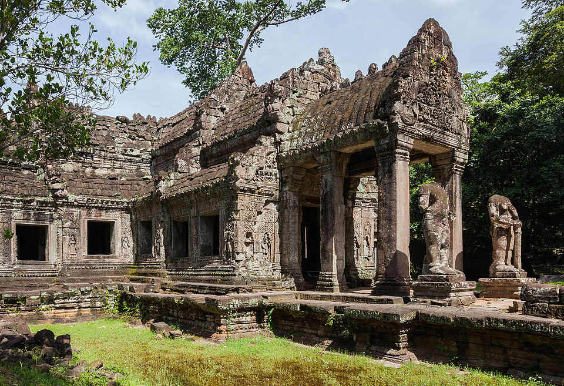
…is sometimes transliterated as Prah Khan, was built in the 12th century for King Jayavarman VII. It is located northeast of Angkor Thom and just west of the Jayatataka baray, with which it was associated. It was the centre of a substantial organisation, with almost 100,000 officials and servants. The temple is flat in design, with a basic plan of successive rectangular galleries around a Buddhist sanctuary complicated by Hindu satellite temples and numerous later additions. Like the nearby Ta Prohm, Preah Khan has been left largely unrestored, with numerous trees and other vegetation growing among the ruins. Preah Khan was built on the site of Jayavarman VII’s victory over the invading Chams in 1191. Unusually the modern name, meaning “holy sword”, is derived from the meaning of the original—Nagara Jayasri (holy city of victory).The site may previously have been occupied by the royal palaces of Yasovarman II and Tribhuvanadityavarman. The temple’s foundation stela has provided considerable information about the history and administration of the site: the main image, of the bodhisattva Avalokiteśvara in the form of the king’s father, was dedicated in 1191 (the king’s mother had earlier been commemorated in the same way at Ta Prohm). 430 other deities also had shrines on the site, each of which received an allotment of food, clothing, perfume and even mosquito nets; the temple’s wealth included gold, silver, gems, 112,300 pearls and a cow with gilded horns. The institution combined the roles of city, temple and Buddhist university: there were 97,840 attendants and servants, including 1000 dancers and 1000 teachers. The temple is still largely unrestored: the initial clearing was from 1927 to 1932, and partial anastylosis was carried out in 1939. Since then free-standing statues have been removed for safe-keeping, and there has been further consolidation and restoration work. Throughout, the conservators have attempted to balance restoration and maintenance of the wild condition in which the temple was discovered: one of them, Maurice Glaize, wrote that; The temple was previously overrun with a particularly voracious vegetation and quite ruined, presenting only chaos. Clearing works were undertaken with a constant respect for the large trees which give the composition a pleasing presentation without constituting any immediate danger. At the same time, some partial anastylosis has revived various buildings found in a sufficient state of preservation and presenting some special interest in their architecture or decoration. Since 1991, the site has been maintained by the World Monuments Fund. It has continued the cautious approach to restoration, believing that to go further would involve too much guesswork, and prefers to respect the ruined nature of the temple. One of its former employees has said, “We’re basically running a glorified maintenance program. We’re not prepared to falsify history”.It has therefore limited itself primarily to stabilisation work on the fourth eastern gopura, the House of Fire and the Hall of Dancers
Explore Siem Reap with a local tuk-tuk driver. Here are some photos from around Siem Reap.